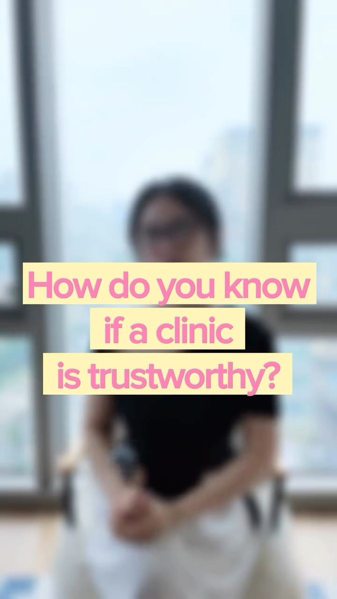

A shortlist, not a sales pitch
Within a day of your message you get 2–3 verified clinics for your concern, with honest prices, downtime and a rough plan for your days in Seoul.

I match international patients with verified clinics, come with you on the day, and look after you once you’re home.
 Romie · your coordinator
Romie · your coordinator
Tell me what you’d like to change. I send 2–3 verified clinics with honest prices and downtime.
I book it, translate, and sit next to you at the consultation and treatment. Coming alone is fine.
Day 1, 7 and 30, even after you fly home. Send me a photo any time.
Clinics pay us a referral fee, only after your treatment. You pay the clinic the normal price.
No packages to choose from and no pressure. You talk to me, the same person, the whole way through.
Within a day of your message you get 2–3 verified clinics for your concern, with honest prices, downtime and a rough plan for your days in Seoul.

I book the appointments, translate at the consultation and stay with you through treatment. Coming on your own is completely fine.
I check in on day 1, 7 and 30. Send me a photo any time, and if anything feels off I talk to the clinic for you.
Glow Up Seoul is registered with Korea’s Ministry of Health & Welfare as a Foreign Patient Attraction Agency.
Free for you. Clinics pay us a referral fee, only after your treatment. You pay the clinic’s normal price.

Q&AHow do you know a clinic is trustworthy?▶ 0:57Q&AThe biggest mistake foreigners make▶ 1:35This or thatBotox or skin boosters?▶ 1:34Hot takeIs the cheapest clinic worth it?▶ 0:51StreetWhat do Koreans actually get done?▶ 1:49StreetKorean men’s skincare secrets▶ 1:33StreetWould Korean girls recommend clinics?▶ 1:47The most common questions in my WhatsApp, answered in a line. Anything else, just ask.
It depends on the clinic and the dose. I send quotes from 2–3 clinics before you book, so you can compare.
Yes. Partner clinics pay me a referral fee, the same at every clinic. You pay the clinic’s normal price, the same as walking in.
2–4 weeks before your trip is ideal, as popular clinics fill up. I can often still find a slot within a few days. For surgery, allow at least 2 weeks.
Start gentle. A skin booster like Rejuran or a no-downtime lifting device is a common first step. The doctor confirms what suits your skin.
Of course. I book you in together, often at the same time. Men are very welcome too.
After lifting devices, usually straight away. Injections can leave small bumps or bruises for 1–2 days, and microneedling like Potenza some redness for 1–2 days.
Send a photo and a few words. I reply personally, usually within an hour.